離開方斗浦燈塔, 循涉地可支東面崖邊的步道一直向前走, 沿途風景十分優美, 走走看看, 來到一個由幾棟形狀不相同建築物所組成的大型綜合性設施, 不知道是什麼地方。這裡會不會有餐廳呢?。望望手錶, 約下午一時半, 這時肚子已經十分餓, 心想如果有餐廳就 Perfect 了! 不用在涉地可支出口一帶再花時間找餐廳。
接著立即穿過草坪, 沿建築物前寬闊的廣場走, 當看見廣場中豎立的銘牌時, 才知道是涉地可支水族館 (Aquarium)和 海洋劇場 (Ocean Arena)。

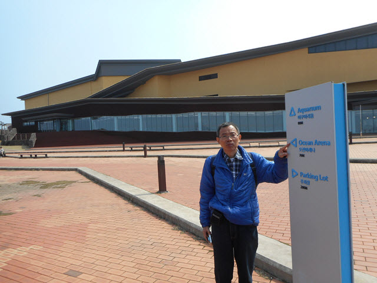
來到大型綜合性設施中間的梯形玻璃幕牆前的廣場, 隱約看見大樓一樓好像有很多人坐下來。開始懷疑會否是一間餐廳呢?
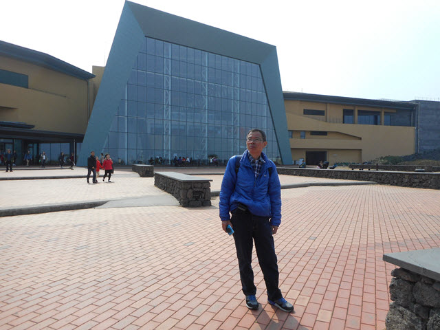
涉地可支水族館食堂 午餐
匆匆走進大樓。哈哈~~~ 原來一樓是一個面積很大的食堂, 經營模式和香港的食街和快餐店一樣, 先在售票處選擇喜歡的食物, 付了錢, 然後往所屬的廚房等待取食物便可以了。
我叫了一客牛肉飯, 價錢是 9,000韓元; 她叫了一客牛骨湯飯, 價錢是 10,000韓元。
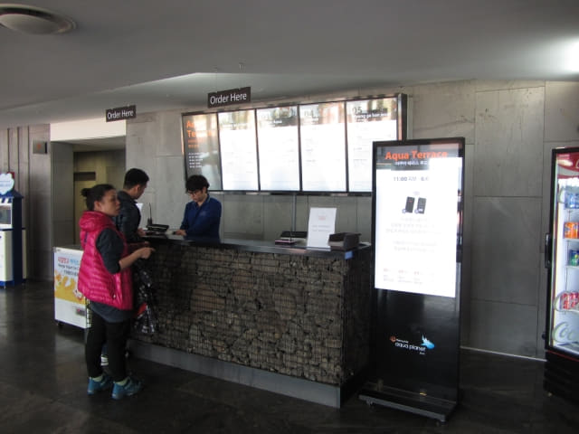
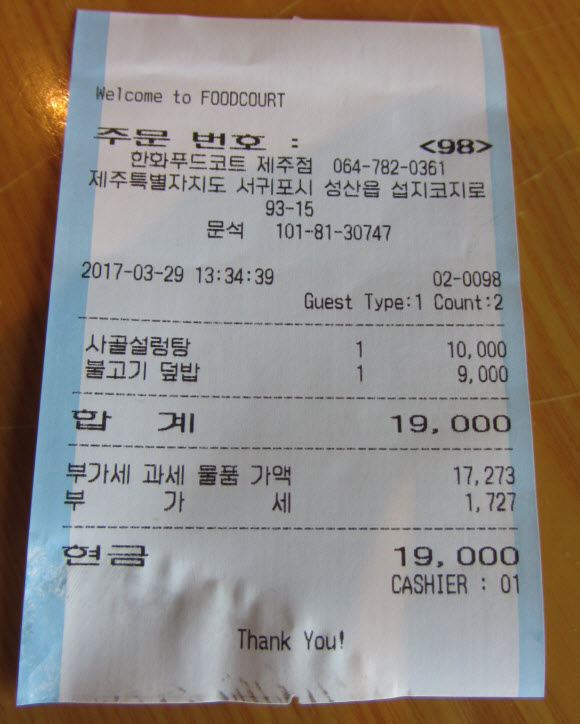
我們隨便在靠近入口的餐桌坐下來, 取了兩杯水, 等了一會, 便往廚房取了我們所點的食物。
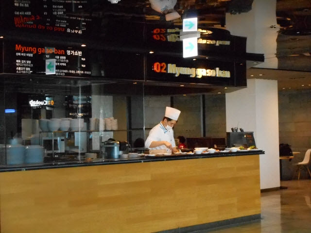
食物味道不錯的, 只是配菜比一般的餐館少很多, 而且不可以免費追加, 不過其實也吃得飽飽的。
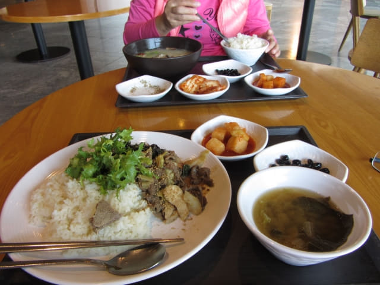
水族館步行往涉地可支出口
吃完午餐, 按計劃是步行往涉地可支出口, 順便欣賞沿途風光, 然後乘計程車返回酒店。
離開前先在水族館前的廣場及附近逛逛。
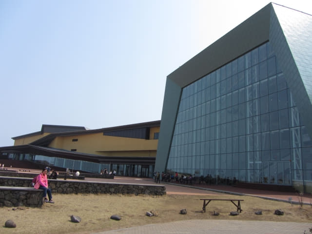
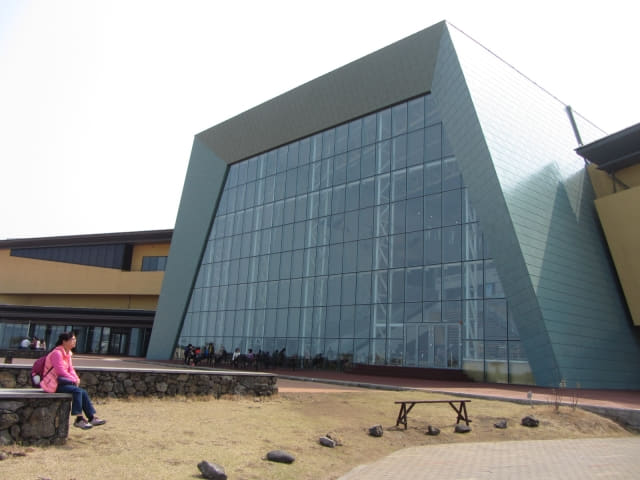
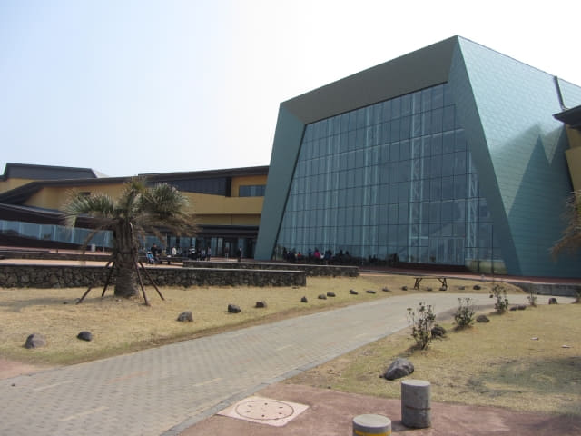
涉地可支水族館前的海濱公園。
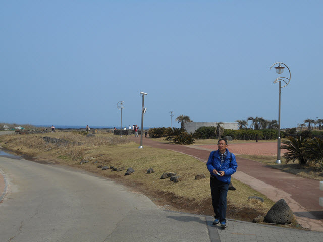
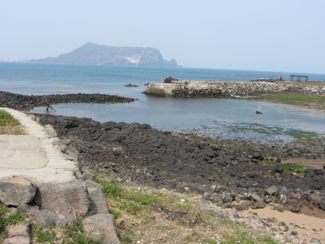
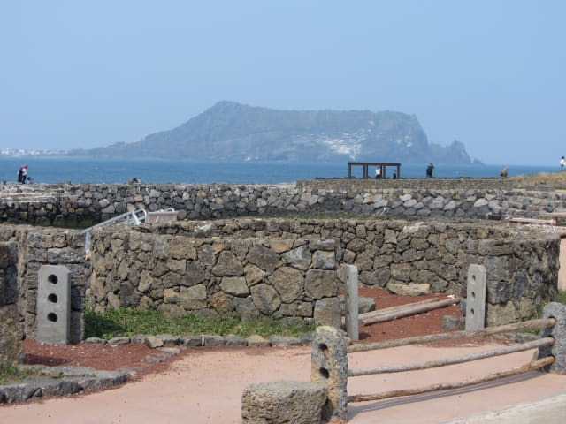
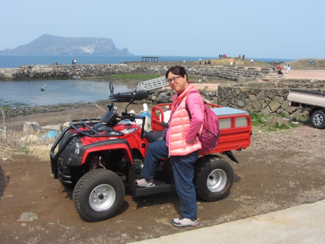
在海濱公園流連了一會, 離開, 繼續向前走往涉地可支出口, 估計那裡應該比較容易搭乘計程車。
經過一間房屋, 不知是海女居住的地方, 還是海女表演的場地。
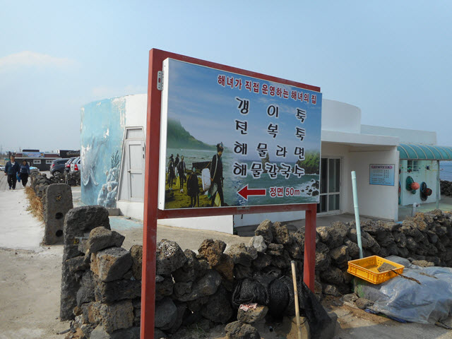
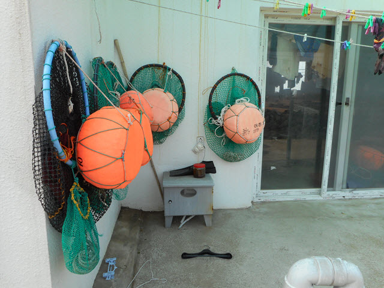
繼續向前走, 經過一個海邊的涼亭。
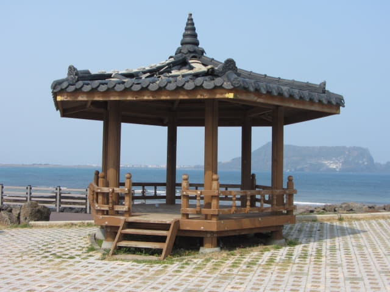
乘計程車返美麗度假村
突然間, 看見有一輛計程車向我們的方向駛來, 停在前面不遠處的店舖門前, 接著有一位乘客下車。
「不是 On Call 計程車來的!」
恐怕給其他乘客捷足先得, 便立即跑往計程車。
很順利登上了計程車, 沿途交通十分暢通, 約十分鐘便返回美麗度假村, 車資是6,500韓元。
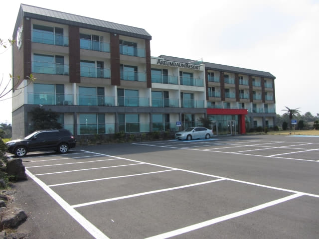